TRIBE
TRIBE turns the M-VAVE FM-1 into a ten-track groovebox. Every track can play any engine: a kick, a 909 or 808 drum voice, or a 303 bass line. Each track has sixteen clips to launch, you can add scatter effects while it plays, send tracks to two master effects, and put the master volume, a DJ filter, the effects or the tempo on the four master knobs.
New in this version: see What's new.
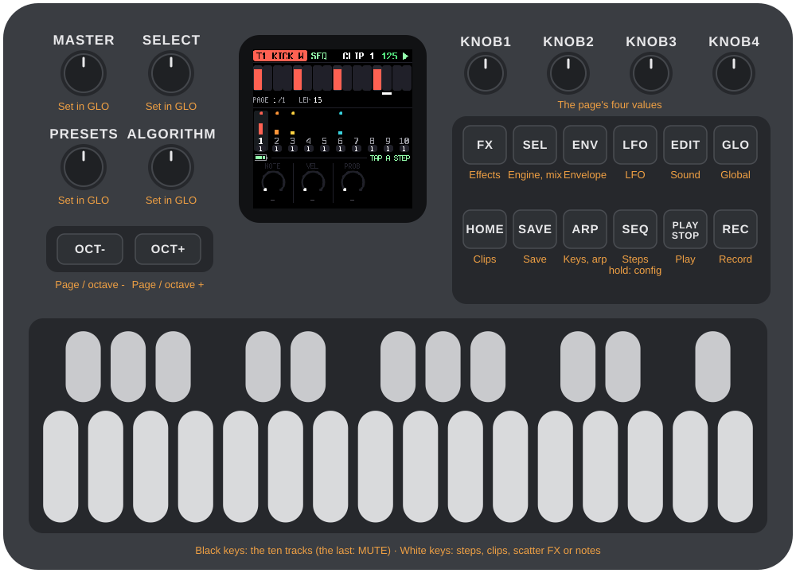
1Install
Try it first: the TRIBE emulator runs the same code in the browser, with sound, played with the mouse, a touch screen or the keyboard.
Install: open the web installer in Chrome or Edge, connect the FM-1 with a USB data cable and press Install. Don't unplug it while it's writing; when it finishes, the FM-1 restarts into TRIBE.
Go back: "Back to the stock firmware", at the bottom of the same page, puts M-VAVE's firmware back (download the FM-1 V15 file from the link there, choose it, press the button). M-VAVE's own updater, M-UPGRADE, works too.
Installing other firmware is at your own risk. If the FM-1 ever won't start, see Recovering an FM-1 that won't start.
Your saved clips stay in the FM-1's memory when you install a newer version. The settings (tempo, levels, effects, knob setup) go back to their defaults after an install that changes how they are stored; the what's-new page says when that happens.
Install from the command line
Download the firmware file (for example tribe-0.1-beta.fwsc) from the releases page, get the TRIBE source from GitHub, install Python 3 with pip3 install mido python-rtmidi, and run:
python3 tools/fm1_install.py tribe-0.1-beta.fwsctools/flash.sh does the same for a build you made yourself (see BUILDING.md).
2Getting started
TRIBE starts with a small beat already in it, so there is something to hear straight away.
- Press PLAY. Ten tracks are lined up, and several already have a pattern.
- Press a black key to pick a track. The black keys are the tracks, 1 to 10, left to right. The screen's header names the track and its engine.
- The white keys are the sixteen steps of the track. Press one to switch a step on, press it again to switch it off. Hold an "on" step to edit it: the three or four knobs become its note, velocity, probability (and length and slide on a 303).
- Press EDIT, ENV or FX to shape the track's sound with the four knobs.
- Hold the eleventh black key (MUTE) and tap a track key to mute or unmute that track.
- Press HOME for the clips: sixteen per track. Press a white key to launch one. It switches at the end of the pattern; press it again to switch at once.
- Press SEL for the mix: each track's engine, volume and its two sends.
- Press SAVE when you like what you hear.
3Controls
The drawing at the top of the manual names every control. In more detail:
| Control | What it does |
|---|---|
| MASTER | A pot. The master volume until you assign it something else in GLO. |
| SELECT, PRESETS, ALGORITHM | Three encoders, free for you to assign in GLO. By default SELECT is the DJ filter, PRESETS the amount of FX 1 and ALGORITHM the amount of FX 2. |
| OCT-, OCT+ | Page through the steps (SEQ) or the sound pages (FX, ENV, LFO, EDIT). On the keyboard (ARP, REC), the octave. |
| KNOB 1–4 | The four values at the bottom of the screen. |
| FX, ENV, LFO, EDIT | The track's sound, in four groups of parameters. Press the same button again for the next page of four. A button is dark when the engine has nothing in that group. |
| SEL | The mix: engine, volume and sends of every track. |
| GLO | The global settings. |
| HOME | The clips. |
| SAVE | The save pick (see Saving). |
| ARP | The keyboard plays the track; arpeggiator and transposition. |
| SEQ | The steps. Hold it for the sequencer's settings. |
| PLAY | Start and stop. |
| REC | Record notes while it plays. |
| White keys | Steps. On HOME, clips. While it plays on a sound page or GLO, scatter effects. On ARP and REC, notes. |
| Black keys | Tracks 1–10. The eleventh is MUTE. |
A button that opens a screen always opens the same one. The screen's name is in the strip above the knobs.
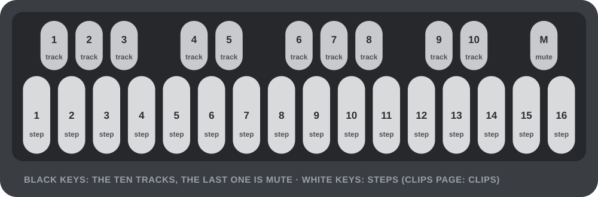
4Tracks and engines
There are ten tracks. Each plays one engine, which belongs to the clip, so changing clips can change the engine too. Choose it on the SEL page, with KNOB 1.
| Engine | What it is |
|---|---|
| NONE | An empty track. |
| KICK W | A kick built on a waveform: frequency, FM, folding, harmonics. |
| KICK P | A kick with a morphing oscillator and an FM pair. |
| 909 BD, SD, LT, MT, HT, RS, CP, CH, OH, CR, RD | The 909 voices: kick, snare, three toms, rim, clap, closed and open hat, crash, ride. |
| 808 BD, SD, LT, MT, HT, RS, CP, CB, CY, OH, CH | The 808 voices: kick, snare, three toms, rim, clap, cowbell, cymbal, open and closed hat. |
| 303 | The bass synth, with accent, slide and its LFO. |
Every drum engine is pitched: the note of a step changes its tune, which is what makes the kicks useful. A synth step has a note, a velocity, a length and a slide.
A voice exists once. Each 909 and 808 voice can be on one track at a time (a second track that picks a voice already in use shows BUSY in the header and stays silent), there are two 303s and three kicks (KICK W and KICK P share them).
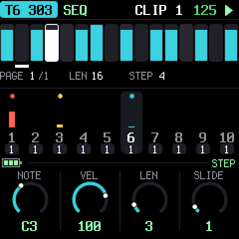
5The sequencer
Press SEQ. The sixteen white keys are the steps of the selected track, with the step the track is playing lit. Press a key to switch a step on or off. Hold an "on" step (about a third of a second) and it stays selected: the knobs become that step's.
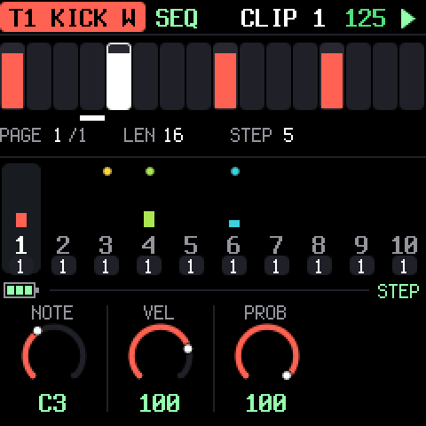
- Drums: NOTE, VELOCITY, PROBABILITY (the chance it plays, 0–100%).
- 303: NOTE, VELOCITY, LENGTH (in quarter steps), SLIDE (the note glides into the next).
With no step selected the knobs are greyed and do nothing. A track can be 16, 32 or 64 steps; OCT- and OCT+ page through them, sixteen at a time.
Hold SEQ (about half a second) for the sequencer's settings of the clip, saved with it. Let go to go back to the steps.
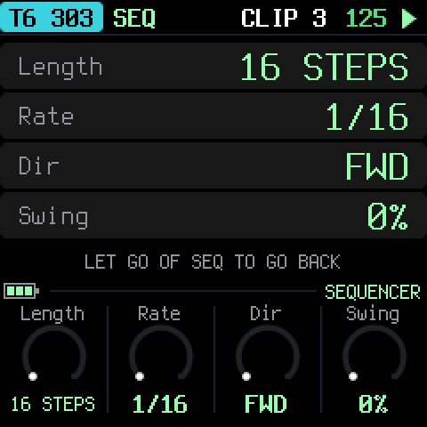
| Setting | Values |
|---|---|
| LENGTH | 16, 32 or 64 steps |
| RATE | 1/16, 1/8, 1/32, and the triplets 1/16T, 1/8T, 1/32T |
| DIRECTION | forward, reverse, ping-pong, random |
| SWING | 0–100%: the second step of each pair is late |
Each track runs on its own clock, so a 1/32 hat can play over a 1/8 bass. A queued clip takes over when the track's pattern ends, in whatever direction it plays.
6Sound pages and the LFO
FX, ENV, LFO and EDIT show the parameters of the selected track's engine in four groups. The four knobs edit the page; the name and value are under each knob. When a group has more than four parameters there are dots in the strip and OCT-/OCT+ (or pressing the button again) flip pages.
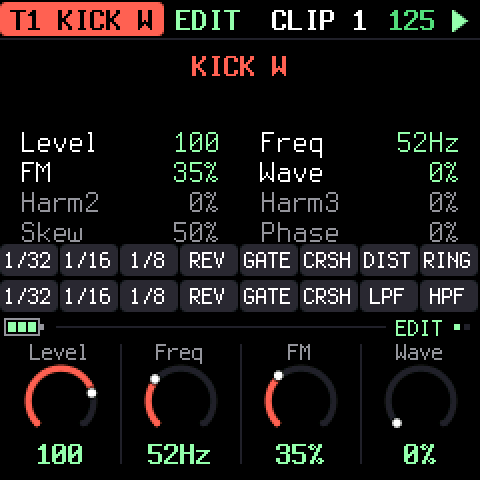
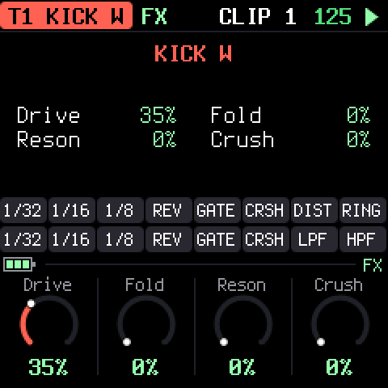
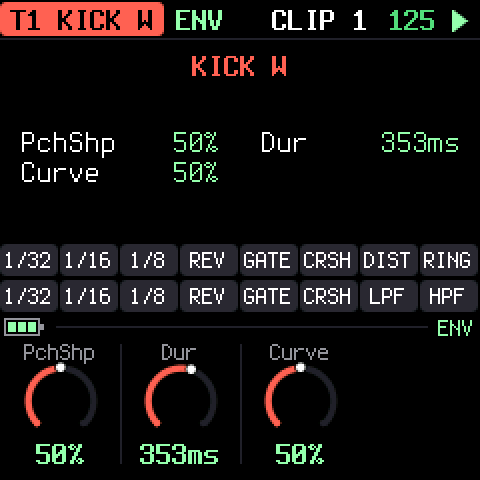
What each engine has is listed in section 14. Parameters belong to the clip: switch clips and the sound switches with it.
LFO (the 303 only, since a drum hit is too short for one) is a modulation of one of the engine's parameters. There is one per clip, saved with it.
| Control | |
|---|---|
| SHAPE | sine, triangle, saw, square, random |
| RATE | synced to the tempo (1/64 to 8 bars) or free (0.05–25 Hz) |
| DEPTH | 0 is off; at full the parameter moves half its range each way |
| TARGET | the parameter it moves |
| SYNC | on: tempo-synced; off: free |
| RETRIG | restart on every note (with random: a new value on every note) |
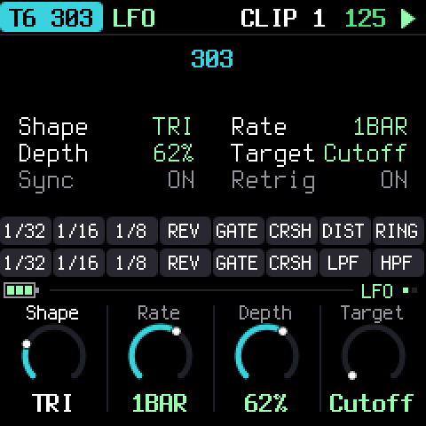
7Clips
Press HOME. Each track has sixteen clips; a clip holds everything of the track: pattern, engine, sound, LFO and sequencer settings. The grid shows ten rows (the tracks) of sixteen (the clips); a filled square is a clip with notes in it, the playing one is lit.
The white keys launch a clip of the selected track:
- The first press queues it (it blinks) and it takes over at the end of the pattern.
- Press the same key again while it is queued to switch at once.
KNOB 1 on this page is the track's level.
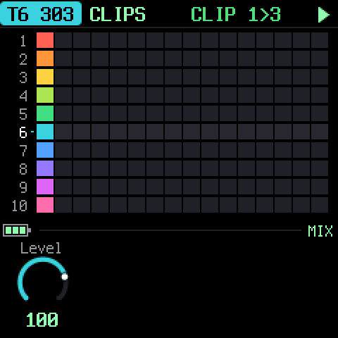
Changed and not saved? If you edit a clip, leave it and launch it again before saving, it comes back as it was last saved. Save first (or save with the pick) to keep an edit.
8Scatter effects
While it plays, the second row of keys on a sound page (FX, ENV, LFO, EDIT) or on GLO is not for notes but for scatter effects, held for as long as you press. The first eight act on the selected track, the last eight on the whole mix:
| Keys 1–8 (the track) | Keys 9–16 (the mix) |
|---|---|
| 1/32, 1/16, 1/8: a loop of that length | 1/32, 1/16, 1/8: a loop of that length |
| REV: reverse | REV: reverse |
| GATE: chop | GATE: chop |
| CRSH: bit crusher | CRSH: bit crusher |
| DIST: distortion | LPF: a low-pass filter |
| RING: ring modulator | HPF: a high-pass filter |
One effect at a time per scope. Stopped, the same keys audition the track's notes.
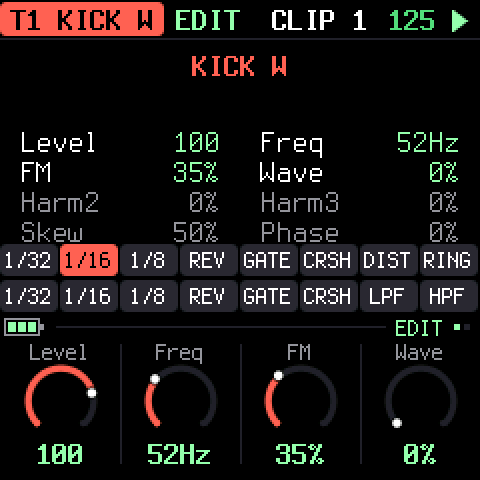
9Keys, arpeggiator and recording
ARP turns the whole keyboard into a keyboard for the selected track, from F3 to G5; OCT- and OCT+ move it up and down. The first knob chooses a mode:
| Mode | |
|---|---|
| KEYS | Plain keyboard. |
| UP, DOWN, UPDN, RAND | The held keys arpeggiate (with PLAY). RATE (1/16, 1/8, 1/4), GATE and OCT (octaves) are the other knobs. |
| TRSP | Transposition: a key is a number of semitones from middle C (the dot). The track's sequence plays transposed until the next key. Leaving TRSP puts it back. |
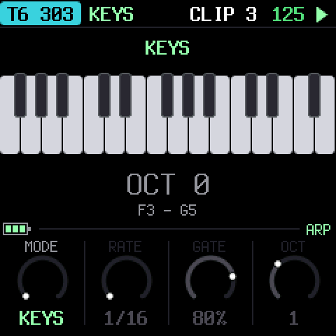
REC gives the keyboard to the selected track too, and while the track plays it records: a note goes into the nearest step of the track's pattern (a drum hit, or a 303 note whose length is how long you held the key). Stopped, REC just plays.
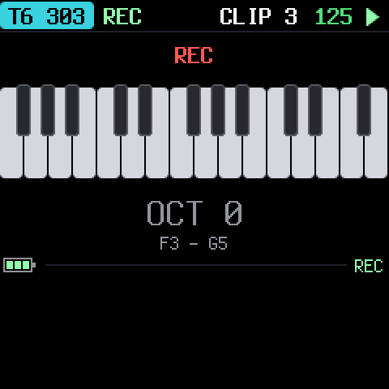
10The mix: SEL
SEL is the page of what every track has. Each track is a column: the wide bar is its live level (after the volume and the mute), the white tick the volume, and the two thin bars its sends. Black keys pick the track.

| Knob | |
|---|---|
| ENGINE | which engine the clip on this track plays |
| VOLUME | the track's level |
| SEND 1 | how much goes to FX 1 |
| SEND 2 | how much goes to FX 2 |
The sends start closed. FX 1 and FX 2 are two master effects (chosen in GLO, next section): raise a track's send to put it in the echo or the room. Sends are after the volume and the mute.
11Global settings and the master knobs
GLO is a list; KNOB 1 scrolls, KNOB 2 changes the value of the row.
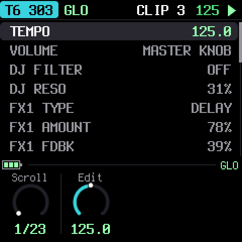
| Row | |
|---|---|
| TEMPO | 30–300 BPM |
| VOLUME | The master volume. It counts when the MASTER knob is not the volume; otherwise the row says MASTER KNOB. |
| DJ FILTER | One knob: low-pass to the left, high-pass to the right, off in the middle |
| DJ RESO | The DJ filter's resonance |
| FX1 TYPE, FX1 AMOUNT, FX1 PARAM | The first master effect: what it is, its return level and its own control |
| FX2 TYPE, FX2 AMOUNT, FX2 PARAM | The same for the second |
| MASTER / SELECT / PRESETS / ALGO KNOB | What each of the four knobs does |
| COMP THRESH … COMP MIX | The master compressor |
| CLIPS | How many clips are unsaved |
| CPU | The audio's load, and its peak |
| BATTERY | The charge, or USB POWER |
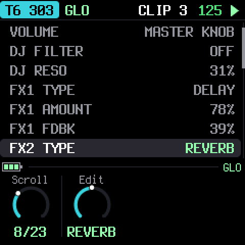
FX 1 and FX 2
Each of the two master effects is one of:
| Type | PARAM is |
|---|---|
| REVERB | SIZE of the room |
| DELAY | FEEDBACK (a dotted eighth, darker with every repeat) |
| DRIVE | how hard it is driven (a soft clip) |
| DISTORT | how hard it is driven (a hard clip) |
| FUZZ | the fuzz (lopsided clipping) |
| WAVSHAPE | the fold of a wavefolder |
| CRUSH | the bits and the sample rate |
| DECIM | the sample-rate reduction |
| RING | the ring modulator's frequency, 40 Hz–2 kHz |
AMOUNT is how much of the effect returns to the mix. The reverb and the delay have one buffer each, so only one of the two slots can be a reverb and only one a delay.
The four knobs
MASTER (a pot) and SELECT, PRESETS and ALGORITHM (encoders) each do one of:
VOLUME · DJ FILTER · DJ RESO · FX1 AMOUNT · FX2 AMOUNT · BPM
Choose in GLO with KNOB 2 on the knob's row. A knob and the GLO row of the same name are one value: turn either. BPM on an encoder moves one BPM a click; on the pot, 30 to 300.
The factory setup: MASTER volume, SELECT the DJ filter, PRESETS FX 1's amount, ALGORITHM FX 2's. The DJ filter acts on the whole mix.
The compressor
The master compressor is always on, then a limiter. GLO has its threshold, ratio, attack, release, makeup and mix. The defaults are a gentle glue: -12 dB, 2:1, 8 ms, 110 ms, +2 dB.
12Saving
Nothing is saved on its own. The SAVE light glows when something has changed.
Press SAVE and a pick opens on the screen. Every other button goes dark, SAVE glows at half, and what can be saved blinks:
- the track keys whose clip on screen has changed,
- GLO, if the global settings have changed.
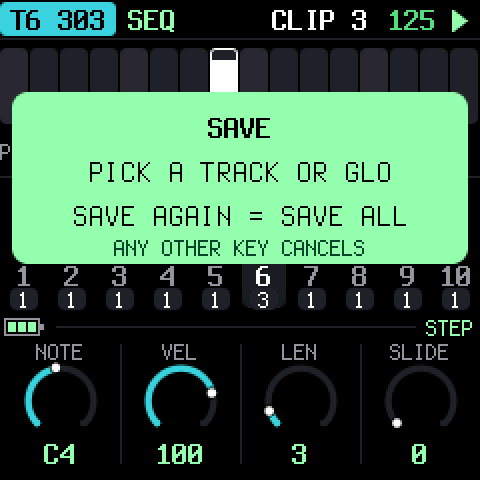
Press a blinking track key to save that clip, or GLO to save the settings. Press SAVE again to save everything that changed, including clips that are not on screen. Any other button or key cancels. With nothing to save, SAVE only says so.
The setting the MASTER knob is doing is never saved (its volume, if it is the volume): the pot is a position, and TRIBE reads it when it starts. Everything else on GLO is saved, the volume included when MASTER does something else.
Clips are saved to the FM-1's flash, one at a time, only the ones that changed. If the power is cut in the middle of a save, the previous version of the clip is still there.
13Troubleshooting
Update mode: hold OCT- and OCT+ together for five seconds. A countdown appears; let go before it ends to cancel.
Calibration: if a button or knob does the wrong thing, hold OCT- and OCT+ while you switch the FM-1 on. The screen then asks you to press each button and turn each knob in turn.
It's crackling or cutting out: look at CPU in GLO while everything plays. Ten tracks of 303s and kicks is a lot for the FM-1; turn tracks to NONE or to simpler engines if the peak reaches 100%.
After a crash: TRIBE shows a red CRASH screen and restarts by itself a few seconds later. The next start shows RESTARTED AFTER A CRASH and an address (PC ...) for a moment. If you report the problem, include that address and what you were doing.
Safe mode: if TRIBE crashes twice in a row while starting, it starts in SAFE MODE instead. There's no sound, but USB works, so the web installer can reach it: reinstall TRIBE, or put the stock firmware back from the same page. Press PLAY to try starting TRIBE normally again. If even safe mode fails twice, the FM-1 drops into the chip's own update mode, and only the rescue below can reach it.
Recovering an FM-1 that won't start
If the FM-1 is in the chip's own update mode (a blank screen after crashes), neither the web installer nor M-VAVE's updater can see it, but a script can put M-VAVE's firmware back, on a Mac, with the USB cable you already have:
Open Terminal, paste this line and press Return:
bash -c "$(curl -fsSL https://raw.githubusercontent.com/apiel/fm1-tribe/main/tools/fm1_rescue.sh)"- If a window asks to install the command line developer tools, click Install. When it has finished, paste the line again.
- If it asks for a password, type your Mac password (nothing shows as you type) and press Return.
- When it says it's waiting, plug the FM-1 in and switch it on. It crashes and goes blank, and the script catches it. It checks the chip, saves a backup of the FM-1's memory in the
fm1-rescuefolder in your home folder, and asks before it writes anything. - Type yes and press Return. Don't unplug anything until it says it's restarting the FM-1. The FM-1 then starts into its original firmware, and you can install TRIBE again from there.
The script downloads M-VAVE's FM-1 V15 firmware and JieLi's flash loader, and checks both against known fingerprints. It writes only the firmware area of the memory, never the bootloader or the FM-1's own settings, and checks everything it writes. Running it again is always safe. If it fails, copy everything in the Terminal window and open an issue. If the FM-1 never shows up at all, Felucca's FM-1-transporter (a small RP2040 board wired to the USB lines) can still reach it.
14Parameters
What each engine's four groups hold, page by page (four knobs a page). Ranges are what the knob shows; every knob is 0–127 underneath.
| Engine | FX | ENV | EDIT |
|---|---|---|---|
| KICK W | Drive, Fold, Reson, Crush | PchShp, Dur, Curve | Level, Freq, FM, Wave, Harm2, Harm3, Skew, Phase |
| KICK P | Drive, Wfold, Reson, Crush, Boost | Dur, SwpShp, SwpDpt, FMSnap | Level, Freq, Morph, FMDpt, FMRat |
| 909 BD | Drive, Dist | Attack, Decay, P.Dpth, Pitch | Level, Tune |
| 909 SD | Drive, Dist | (none) | Level, Tune, Tone, Snappy |
| 909 LT, MT, HT | Drive, Dist | Decay, Attack | Level, Tune |
| 909 RS | Drive, Dist | (none) | Level, Tune |
| 909 CP | Drive, Dist | Tail | Level, Tune |
| 909 CH, OH, CR, RD | Drive, Dist | Decay | Level, Tune |
| 808 BD | Drive, Dist | Decay, Attack | Level, Tone, Tune |
| 808 SD | Drive, Dist | Decay | Level, Tone, Snappy, Tune |
| 808 LT, MT, HT, RS | Drive, Dist | Decay | Level, Tune, Sound |
| 808 CP | Drive, Dist | Decay, Attack | Level, Tune, Sound |
| 808 CB, CY, OH, CH | Drive, Dist | Decay | Level, Tune |
| 303 | Drive, DrvTyp | EnvMod, Decay, Slide, AccDec | Cutoff, Reso, Accent, Wave, Tune |
The 303 also has the LFO page (section 6). Every track has its VOLUME and the two sends on SEL.
15Credits
TRIBE is free software under the GNU General Public License, version 3. If you share the firmware, you must also share its source code.
- TRIBE is a fork of X0X by Charles Vestal, which is built on Felucca by Leo Kuroshita, Hügelton Instruments: the hardware layer, USB, update loader, installer and storage.
- The kicks (KICK W and KICK P) and the scatter effects are from zicBox by apiel.
- The 909 is from 9W9 by athousanddetails, which is based on ER-99 by Matthew Cieplak. Its hat and cymbal samples are ER-99's.
- The 808 is from 8W8 by athousanddetails.
- The 303 is from schwung-303, built on Open303 by Robin Schmidt (MIT licence), with extensions based on jc303 and dm-Rat.
- The fonts are Barlow Semi Condensed and Terminus (SIL Open Font License).
M-VAVE and FM-1 are trademarks of their owners, and TR-808, TR-909 and TB-303 are Roland trademarks. TRIBE is not connected with M-VAVE, Roland or Hügelton Instruments.